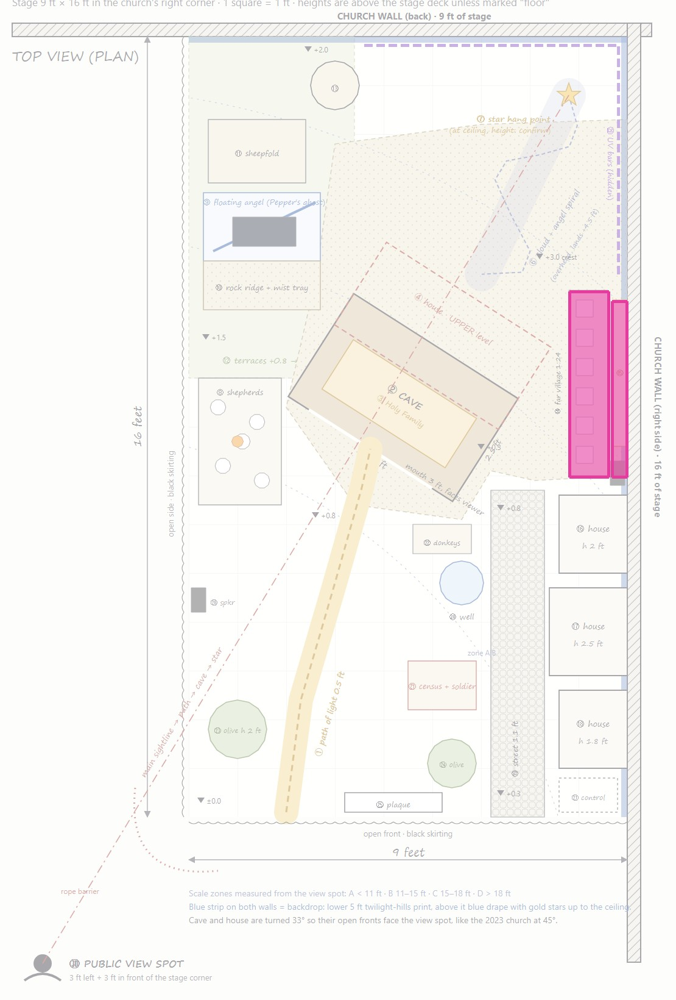
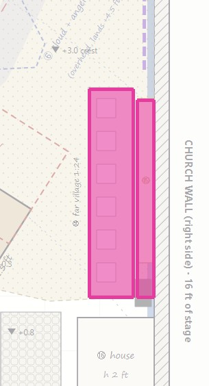

14 far village (1:24), 15 Magi caravan on a wall shelf
Build window: 10 Dec → 19 DecAbout 4 person-daysOne miniature builderCost: Prop-only ₹2,100 · Lean ₹3,600 · Full ₹6,300
Position and size
Right-wall crest: far village strip 3.8 × 0.8 ft at y 5.2–9.0 and +3.0 ft; Magi shelf 3 × 0.3 ft at +3.6 ft. Both sit at bearings 38–49° from V, clear of the cave house (25–41°).
Where it sits

Close-up

Blueprint drawings (dimensioned)
Materials (₹)
Item
Qty
Prop-only
Lean
Full
Thermocol 1 in + clay for 20 houses
1 sheet
800
800
1,200
Pale cream/blue paint
lot
500
500
600
1:24 caravan: 3 kings, camels, servant
set
0
1,500
3,500
Wall shelf (ply, 3 ft) + 40 micro LEDs 3 mm
1
800
800
1,000
Total for this block
2,100
3,600
6,300
Tools: Craft knife, tweezers, small brushes, micro-LED kit
How to build it, in order
Cut a 3.8 × 0.8 ft strip; make 20 houses 3–5 in tall; paint pale with blue shadows.
Place the strip at y 5.2–9.0 on the right-wall crest at +3.0 ft.
Fix a 3 × 0.3 ft ply shelf at +3.6 ft; paint a road line on it.
Mount the caravan; fit micro LED lanterns on the kings.
Check from the view spot that both are visible (bearings 38–49°).
Before you start
Re-run the sightline check from V before fixing; the first layout hid both behind the house.
Check before cutting
Positions changed after the sight check: the first layout hid both behind the house.
Done when (tick each)
From V both are visible and not covered by the house.
Far village is pale cream with blue shadows (tier D: paler, cooler, less saturated).
Each king has a micro-LED lantern that glows from 3:30.
Strip and shelf are fixed firmly; nothing overhangs the street.
Hands over to
Sits on the crest of B and the right wall. Micro-LEDs wire back to hatch A (H).